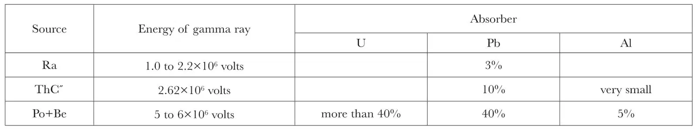
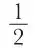
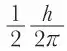

中文
中文P. M. S. Blackett
Editor’s Note
The discovery of the positive electron, although consistent with Dirac’s theory of electrons, created problems for nuclear physicists eager for a plain account of how positive electrons are generated—most often by the interaction of energetic γ-rays with heavy particles or even atomic nuclei. Blackett’s approach to the problem in this article is very much that of an experimentalist: how best to explain the fragmentary experimental data so far accumulated about positrons. 中文
THE discovery of the positive electron arose from the study of cosmic radiation by the cloud method1. Amongst the tracks of the particles of very great energy, associated with cosmic radiation, were found some which differed from the tracks of negative electrons only by being curved by a magnetic field in the opposite direction. Terrestrial sources of positive electrons of lower energy are now also available, since it has been found that they are produced when hard gamma rays are absorbed by matter, and also in certain cases of nuclear transformation. The production of positive electrons in the laboratory is therefore an easy matter. 中文
The charge and mass of a positive electron can be calculated from the ionisation it produces. For example, Anderson2 has estimated that the difference between the ionisation due to fast positive and negative electrons with the same curvature in a magnetic field, is not as much as 20 percent. Since for very fast particles the ionisation depends on the square of the charge but scarcely at all on the mass, the charge on a positive electron cannot differ by as much as 10 percent from that on a negative electron. On the other hand, for slow particles with given charge, the ionisation varies as the mass, so the same equality of ionisation indicates that the masses must be within 20 percent. To obtain further information as to the properties of positive electrons, it is convenient to study in detail the simplest case known of their production; namely, that in which a beam of homogeneous gamma rays is absorbed by heavy elements. 中文
The well-filtered gamma radiation from thorium-C" is nearly homogeneous and has an energy of 2.62×106 volts. It has been found by Anderson and Neddermeyer3, by Curie and Joliot4 and by Meitner and Philipp5 that when such rays fall on a heavy element, positive electrons are ejected. 中文
Positive electrons are also produced when the radiation from beryllium, bombarded by alpha rays, is absorbed6. Though this radiation is complex, consisting of neutrons together with gamma rays of rather more than 5.0×106 volts energy, Curie and Joliot6 have shown by absorption experiments that the positive electrons are certainly mainly due to the latter. 中文
The following table, which is derived from the work of Curie and Joliot, Grinberg7, and some unpublished results of Chadwick, Blackett and Occhialini, gives the numbers of positive electrons ejected in a forward direction from different elements by various radiations, the numbers being expressed as a fraction of the observed number of negative electrons. These percentages give only a rough indication of the frequency of production of positive electrons, since the actual angular distributions are not known, and since the effect of the particular experimental arrangement may be considerable. 中文
Number of Positive Electrons produced when Gamma Rays are Absorbed.

The ejected negative electrons comprise two groups, consisting of the photo-electrons with the whole energy of the quanta, that is with 2.62×106 volts, and the Compton electrons which have a maximum energy of 2.39×106 volts in a forward direction. The table shows that the number of positive electrons increases rapidly with the energy of the quanta and with the atomic number of the absorber. 中文
If from these figures the effective area of a heavy atom for the production of a positive electron by a quantum of 5×106 volts is calculated, values are found which are rather larger than the area of cross-section of the nucleus. This fact makes it improbable that the production of the positive electrons is mainly a nuclear phenomenon. 中文
This view is strengthened by consideration of the energies of the particles. The maximum energy of the positive electrons produced by a given radiation appears to be about the same for all absorbers. If the particles had a nuclear origin, a variation with the type of nucleus would be expected. 中文
For the 5.0×106 and the 2.62×106 volt radiations, the maximum energies of the positive electrons are found to be about 4 and 1.6×106 volts respectively, that is, in each case about a million volts less than the energy of the quantum. 中文
If the positive electrons are indeed produced outside the nucleus, many important conclusions follow:
(a) Since there is certainly no room, in atomic theory, for the permanent existence of positive electrons well outside a nucleus, then a positive electron that comes from there must be born there, and if born there, an equal negative electron must be born simultaneously in order to conserve electric charge. This is confirmed by the experimental observation that pairs of tracks do occur, which almost certainly are to be interpreted as due to the simultaneous ejection of a positive and a negative electron. 中文
To produce such a pair of electrons with opposite charges requires an expenditure of energy (m1+m2)c2. If both particles have the electronic mass, this energy amounts to 1.01×106 volts, so that in the case of the 2.62×106 volt radiation, no pair of positive and negative electrons can have more energy than 1.61×106 volts energy. Anderson has found this to be the case. Again, the maximum energy of a single positive electron producing an unpaired track should also be 1.61×106 volts. An experimental determination of this maximum energy is being made by Chadwick, Blackett and Occhialini, and their preliminary results* give the value of 1.58±0.07×106 volts, in excellent agreement with the theory. 中文
(b) The positive electron must have a spin of

and so obey the Fermi–Dirac statistics. For since energy is observed to be conserved during the birth process, it is to be expected that linear and angular momentum are also conserved. So if a quantum gives rise to a pair of particles, one of which has a spin of
, the other must have the same spin, since a quantum can only excite changes for which the angular momentum changes by 0 or 1. The argument is still valid even if possible changes in the nuclear spin are taken into account, for these must also be integral. 中文
(c) A necessary consequence of the occurrence of the process whereby a quantum interacts with an atom to produce a pair of electrons of opposite sign, is the occurrence of the reverse process, in which a positive electron and a negative electron interact with each other and the field of an atom to produce a single quantum of radiation. Since the conditions for this occurrence cannot be rare, a positive electron cannot be expected to exist for more than a short time in matter at ordinary densities. 中文
These conclusions as to the existence and the properties of positive electrons have been derived from the experimental data by the use of simple physical principles. That Dirac’s theory of the electron predicts the existence of particles with just these properties, gives strong reason to believe in the essential correctness of his theory. 中文
Dirac succeeded in formulating the wave equation for an electron moving in a potential field in such a way as to make it relativistically invariant. The solution of this new wave equation not only led, in the case of the hydrogen atom, to a complete explanation of the fine structure of the spectral lines, but also to a rational explanation of the spin and magnetic moment of the electron itself. 中文
However, in addition to the solutions corresponding to the normal electronic levels found experimentally, were others which seemed to correspond to no observed facts. These solutions seemed to predict the existence of states in which the electrons possessed a negative kinetic energy, and therefore did not correspond to particles in any usual sense. These states could not be ignored, because transitions must theoretically occur between them and the normal states corresponding to positive kinetic energy. Dirac suggested that the difficulty might be avoided if it were supposed that all the negative energy states are normally occupied, and further, that the totality of electrons in such states produce no external field. 中文
On this view, only an unoccupied state or “hole” would correspond to an observed particle. It followed from the theory that such unoccupied states should behave in an external field like particles with the same mass and spin as a negative electron but with a positive charge. The experimental discovery of the positive electron has therefore removed a very serious theoretical difficulty, and by so doing, has greatly extended the field of phenomena over which Dirac’s theory may be applied. 中文
Owing to analytical difficulties, the work of applying Dirac’s theory to special cases has not progressed far, but Oppenheimer and Plesset8 have calculated approximately the probability of the production of pairs of electrons of opposite charge when hard gamma rays are absorbed by matter. So far as these theoretical results go, they are in rough agreement with the experimental conclusions, both as regards the order of magnitude of the effect and its dependence on the energy of the quantum and the atomic number of the absorber. 中文
The calculations give for the extra absorption by lead and tin of the 2.62×106 volt radiation, due to the production of positive electrons, the values of 25 percent and 15 percent of the absorption by the normal scattering and photoelectric processes. These figures are roughly those observed experimentally by Tarrant and Gray. So one may conclude that a large part of the anomalous absorption may be attributed to the production of positive electrons. 中文
One would expect that the absorbed energy would be re-radiated in two ways. An ejected positive electron may disappear by the reverse process to that which produced it, that is, by reacting with a negative electron and a nucleus, to give a single quantum of a million volts energy (see (c) above). Or it can disappear, according to Dirac’s theory, by another type of process, in which a positive electron reacts with a free or lightly bound negative electron so that both disappear with the emission of two quanta of half a million volts energy.† It is remarkable that the re-emitted radiation is estimated by Gray and Tarrant to be composed mainly of just these two energies, of one half and one million volts. However, Fermi and Uhlenbeck9 have found that the theoretical intensity of the hard component is far smaller than that observed. 中文
This absorption of hard gamma rays by atoms, resulting in the production of pairs of oppositely charged electrons, may be thought of as a photoelectric absorption by the “virtual” electrons, that is, by electrons with negative kinetic energy, near the nucleus. According to Beck10, these virtual electrons may be considered to have a binding energy of the order of 2 mc2. Beck also shows that the number of these virtual electrons which are effective for the absorption are proportional to the square of the atomic number and that they amount to about one for each lead atom. The theory also indicates that the birth process takes place within a distance of h/2πmc=3.85×10－11 cm. of the nucleus, that is, well inside the K ring. 中文
Curie and Joliot11 have found that positive electrons are produced when aluminium and boron are bombarded by alpha particles, and that these positive electrons have a higher energy than the accompanying negative electrons. Silver, lithium and paraffin, however, give no positive electrons. Curie and Joliot suggest that the positive electrons originate in the disintegrating nucleus, but it seems possible that they may be produced mainly outside the nucleus by the internal conversion of a gamma ray emitted by the nucleus. To explain the effect in this way, the probability of internal conversion must be nearly unity.‡ The greater energy of the positives may be explained by the fact that a positive electron gains kinetic energy and a negative electron loses it, on escaping from the field of a nucleus. This resulting difference in kinetic energy will be the larger the nearer to the nucleus that the pair is born, and so should be larger in the case of such an internal conversion process, which depends on a spherical wave, than in the usual case of external absorption, which depends on a plane wave. 中文
Though it was in association with cosmic radiation that positive electrons were first detected, the exact part they play in these complicated phenomena is not yet clear. But certain facts are established12. (i) Of the fast particles which produce the cosmic ray ionisation at sea-level, about half are positive and half negative electrons. Their energies range from a few million to nearly 1010 volts. (ii) The same ratio is found in the “showers”. The showers appear therefore to represent the birth of multiple pairs of positive and negative electrons, as a result of one or more collision processes induced by the primary radiation. Dirac’s theory shows that the production of single pairs is of primary importance in the absorption of both gamma rays and particles of high energy13, but has, as yet, given no hint of the cause of the multiple pairs forming the showers. (iii) It has been shown that the majority of the particles incident on the earth’s atmosphere are positively charged14. 中文
Since protons are rarely observed at sea-level, it is probable that the positively charged incident particles are not protons but positive electrons. If this is so, the main part of the flux of cosmic radiation in inter-galactic space must be in the form of positive electrons; and since the total mass of this radiation has been estimated as possibly as large as 1/1,000 part of the mass of all the stars and nebulae15, it appears that the positive electron, though rare, because ephemeral, on earth, is an important constituent of the universe as a whole. 中文
(132, 917-919; 1933)
References:
1. Anderson, Science, 76, 238 (1932). Blackett and Occhialini, Proc. Roy. Soc., A. 139, 699 (1933).
2. Anderson, Phys. Rev., 43, 491 (1933). Phys. Rev., 44, 406 (1933).
3. Anderson and Neddermeyer, Phys, Rev., 43, 1034 (1933).
4. Curie and Joliot, C. R. Acad. Sci., 196, 1581 (1933).
5. Meitner and Philipp, Naturwissenschaften, 24, 468 (1933).
6. Chadwick, Blackett and Occhialini, Nature, 131, 473 (1933). Meitner and Philipp, Naturwissenschaften, 15, 286 (1933). Curie and Joliot, C.R. Acad. Sci., 196, 405 (1933).
7. Grinberg, C. R. Acad. Sci., 197, 318 (1933).
8. Oppenheimer and Plesset, Phys. Rev., 44, 53 (1933).
9. Fermi and Uhlenbeck, Phys. Rev., 44, 510 (1933).
10. Beck, Zeit. Phys., 83, 498 (1933).
11. Curie and Joliot, C. R. Acad. Sci., 196, 1885 (1933).
12. Anderson, Phys, Rev., 41, 405 (1932); Kunze, Zeit. Phys., 80, 559 (1933); Blackett and Occhialini, loc. cit.
13. Furry and Carlson, Phys. Rev., 44, 237 (1933).
14. Johnson, Phys. Rev., 43, 1059 (1933).
15. Lemaitre, Nature, 128, 704 (1931).
* The mass of the positive electron can be calculated from the equation
Emax. = hv －(m1 + m2)c2
Using the values hv = 2.62×106 volts, Emax. = 1.58±0.07×106 volts.
We find
m2 = (1.04 ± 0.14)m1.
This calculation affords probably the most accurate estimate of the mass of a positive electron yet available.
† Dirac’s calculation of this annihilation probability gives a positive electron a life of less than 10－9 sec. in water, the life being inversely proportional to the density. If this predicted process is verified experimentally, it will be possible to assume the reverse process, the creation of a pair of electrons of opposite sign by the collision of two quanta of high energy. This latter process would then be the first case known of the “interference” of quanta; it is conceivable that this process has considerable cosmological importance.
‡ Oppenheimer and Plesset (loc. cit.) predict theoretically far smaller values.